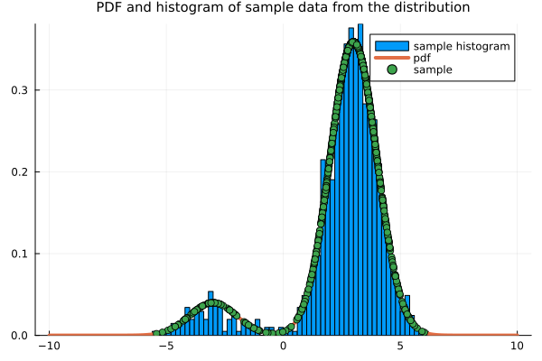
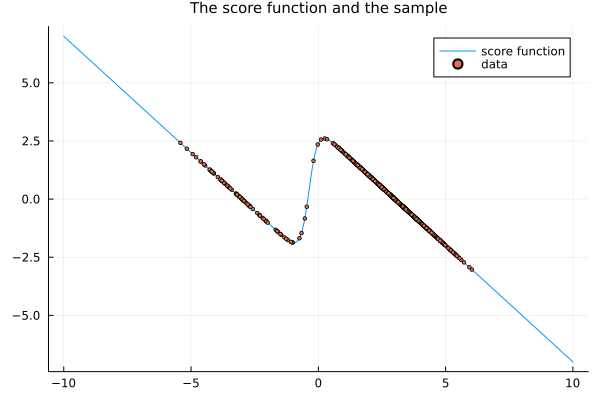
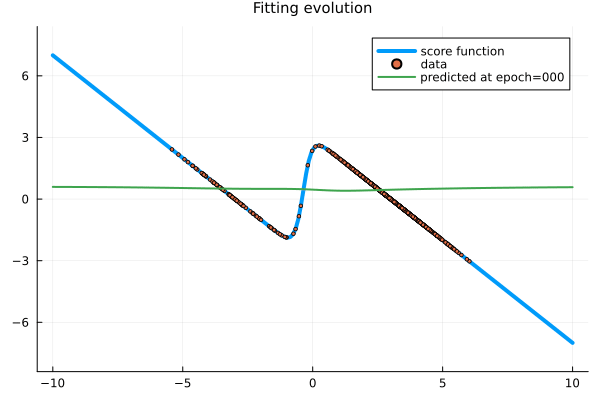
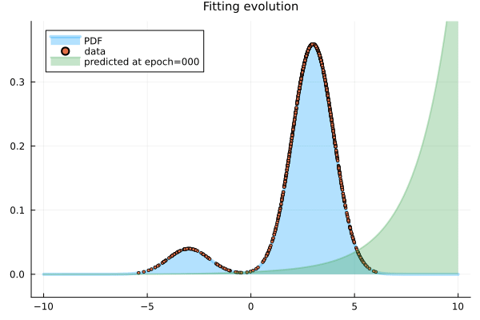

Score matching a neural network
Introduction
Aim
Apply the score-matching method of Aapo Hyvärinen (2005) to fit a neural network model of the score function to a univariate Gaussian distribution. This borrows ideas from Kingma and LeCun (2010), of using automatic differentiation to differentiate the neural network, and from Song and Ermon (2019), of modeling directly the score function, instead of the pdf or an energy potential for the pdf.
Motivation
The motivation is to revisit the original idea of Aapo Hyvärinen (2005) and see how it performs for training a neural network to model the score function.
Background
The idea of Aapo Hyvärinen (2005) is to directly fit the score function from the sample data, using a suitable implicit score matching loss function not depending on the unknown score function of the random variable. This loss function is obtained by a simple integration by parts on the explicit score matching objective function given by the expected square distance between the score of the model and the score of the unknown target distribution, also known as the Fisher divergence. The integration by parts separates the dependence on the unknown target score function from the parameters of the model, so the fitting process (minimization over the parameters of the model) does not depend on the unknown distribution.
The implicit score matching method requires, however, the derivative of the score function of the model pdf, which is costly to compute in general. In Hyvärinen's original work, all the examples considered models for which the gradient can be computed somewhat more explicitly. There was no artificial neural network involved.
In a subsequent work, Köster and Hyvärinen (2010) applied the method to fit the score function from a model probability with log-likelihood obtained from a two-layer neural network, so that the gradient of the score function could still be expressed somehow explicitly.
After that, Kingma and LeCun (2010) considered a larger artificial neural network and used automatic differentiation to optimize the model. They also proposed a penalization term in the loss function, to regularize and stabilize the optimization process, yielding a regularized implicit score matching method. The model in Kingma and LeCun (2010) was not of the pdf directly, but of an energy potential, i.e. with
\[ p_{\boldsymbol{\theta}}(\mathbf{x}) = \frac{1}{Z(\boldsymbol{\theta})} e^{-U(\mathbf{x}; \boldsymbol{\theta})},\]
where $U(\mathbf{x}; \boldsymbol{\theta})$ is modeled after a neural network.
Finally, Song and Ermon (2019) proposed modeling directly the score function as a neural network $s(\mathbf{x}; \boldsymbol{\theta})$, i.e.
\[ \boldsymbol{\nabla}_{\mathbf{x}}p_{\boldsymbol{\theta}}(\mathbf{x}) = s(\mathbf{x}; \boldsymbol{\theta}).\]
Song and Ermon (2019), however, went further and proposed a different method (based on several perturbations of the data, each of which akin to denoising score matching). At this point, we do not address the main method proposed in Song and Ermon (2019), we only borrow the idea of modeling directly the score function instead of the pdf or an energy potential of the pdf.
In a sense, we do an analysis in hindsight, combining ideas proposed in subsequent articles, to implement the implicit score matching method in a different way. In summary, we illustrate the use of automatic differentiation to allow the application of the implicit score matching and the regularized implicit score matching methods to directly fit the score function as modeled by a neural networks.
Loss function for implicit score matching
The score-matching method of Aapo Hyvärinen (2005) aims to minimize the empirical implicit score matching loss function ${\tilde J}_{\mathrm{ISM}{\tilde p}_0}$ given by
\[ {\tilde J}_{\mathrm{ISM}{\tilde p}_0} = \frac{1}{N}\sum_{n=1}^N \left( \frac{1}{2}\|\boldsymbol{\psi}(\mathbf{x}_n; {\boldsymbol{\theta}})\|^2 + \boldsymbol{\nabla}_{\mathbf{x}} \cdot \boldsymbol{\psi}(\mathbf{x}_n; {\boldsymbol{\theta}}) \right),\]
where $(\mathbf{x}_n)_{n=1}^N$ is the sample data from a unknown target distribution and where $\boldsymbol{\psi}(\mathbf{x}_n; {\boldsymbol{\theta}})$ is a parametrized model for the desired score function.
The method rests on the idea of rewriting the explicit score matching loss function $J_{\mathrm{ESM}}({\boldsymbol{\theta}})$ (essentially the Fisher divergence) in terms of the implicit score matching loss function $J_{\mathrm{ISM}}({\boldsymbol{\theta}})$, showing that
\[J_{\mathrm{ESM}}({\boldsymbol{\theta}}) = J_{\mathrm{ISM}}({\boldsymbol{\theta}}) + C,\]
and then approximating the latter by the empirical implicit score matching loss function ${\tilde J}_{\mathrm{ISM}{\tilde p}_0}({\boldsymbol{\theta}})$.
Numerical example
We illustrate the method, numerically, to model a synthetic univariate Gaussian mixture distribution.
Julia language setup
We use the Julia programming language for the numerical simulations, with suitable packages.
Packages
using StatsPlots
using Random
using Distributions
using Lux # artificial neural networks explicitly parametrized
using Optimisers
using Zygote # automatic differentiation
using MarkdownThere are several Julia libraries for artificial neural networks and for automatic differentiation (AD). The most established package for artificial neural networks is the FluxML/Flux.jl library, which handles the parameters implicitly, but it is moving to explicit parameters. A newer library that handles the parameters explicitly is the LuxDL/Lux.jl library, which is taylored to the differential equations SciML ecosystem.
Since we aim to combine score-matching with neural networks and, eventually, with stochastic differential equations, we thought it was a reasonable idea to experiment with the LuxDL/Lux.jl library.
As we mentioned, the LuxDL/Lux.jl library is a newer package and not as well developed. In particular, it seems the only AD that works with it is the FluxML/Zygote.jl library. Unfortunately, the FluxML/Zygote.jl library is not so much fit to do AD on top of AD, as one can see from e.g. Zygote: Design limitations. Thus we only illustrate this with a small network on a simple univariate problem.
Reproducibility
We set the random seed for reproducibility purposes.
rng = Xoshiro(12345)Data
We build the target model and draw samples from it.
The target model is a univariate random variable denoted by $X$ and defined by a probability distribution. Associated with that we consider its PDF and its score-function.
target_prob = MixtureModel([Normal(-3, 1), Normal(3, 1)], [0.1, 0.9])
xrange = range(-10, 10, 200)
dx = Float64(xrange.step)
xx = permutedims(collect(xrange))
target_pdf = pdf.(target_prob, xrange')
target_score = gradlogpdf.(target_prob, xrange')
lambda = 0.1
sample_points = permutedims(rand(rng, target_prob, 1024))
data = (sample_points, lambda)([2.303077959422043 2.8428423932782843 … 3.1410080972036334 2.488464630750972], 0.1)Visualizing the sample data drawn from the distribution and the PDF.
Visualizing the score function.
The neural network model
The neural network we consider is a simple feed-forward neural network made of a single hidden layer, obtained as a chain of a couple of dense layers. This is implemented with the LuxDL/Lux.jl package.
We will see that we don't need a big neural network in this simple example. We go as low as it works.
model = Chain(Dense(1 => 8, sigmoid), Dense(8 => 1))Chain(
layer_1 = Dense(1 => 8, σ), # 16 parameters
layer_2 = Dense(8 => 1), # 9 parameters
) # Total: 25 parameters,
# plus 0 states.The LuxDL/Lux.jl package uses explicit parameters, that are initialized (or obtained) with the Lux.setup function, giving us the parameters and the state of the model.
ps, st = Lux.setup(rng, model) # initialize and get the parameters and states of the model((layer_1 = (weight = Float32[-0.0017783825; -0.9357591; … ; 0.33351308; -0.46867305;;], bias = Float32[0.18317068, 0.5787344, -0.18110967, 0.9307035, -0.43067825, -0.46645045, -0.8246051, -0.9340805]), layer_2 = (weight = Float32[0.27326134 -0.2086962 … 0.42855448 0.5658726], bias = Float32[0.09530755])), (layer_1 = NamedTuple(), layer_2 = NamedTuple()))Loss function
Here it is how we implement the objective ${\tilde J}_{\mathrm{ISM{\tilde p}_0}}({\boldsymbol{\theta}})$.
function loss_function_EISM_Zygote(model, ps, st, sample_points)
smodel = StatefulLuxLayer{true}(model, ps, st)
y_pred = smodel(sample_points)
dy_pred = only(Zygote.gradient(sum ∘ smodel, sample_points))
loss = mean(dy_pred .+ y_pred .^2 / 2)
return loss, smodel.st, ()
endloss_function_EISM_Zygote (generic function with 1 method)We also implement a regularized version as proposed by Kingma and LeCun (2010).
function loss_function_EISM_Zygote_regularized(model, ps, st, data)
sample_points, lambda = data
smodel = StatefulLuxLayer{true}(model, ps, st)
y_pred = smodel(sample_points)
dy_pred = only(Zygote.gradient(sum ∘ smodel, sample_points))
loss = mean(dy_pred .+ y_pred .^2 / 2 .+ lambda .* dy_pred .^2 )
return loss, smodel.st, ()
endloss_function_EISM_Zygote_regularized (generic function with 1 method)Optimization setup
Optimization method
We use the Adam optimiser.
opt = Adam(0.01)
tstate_org = Lux.Training.TrainState(model, ps, st, opt)TrainState(
Chain(
layer_1 = Dense(1 => 8, σ), # 16 parameters
layer_2 = Dense(8 => 1), # 9 parameters
),
number of parameters: 25
number of states: 0
optimizer: Optimisers.Adam(eta=0.01, beta=(0.9, 0.999), epsilon=1.0e-8)
step: 0
)
Automatic differentiation in the optimization
As mentioned, we setup differentiation in LuxDL/Lux.jl with the FluxML/Zygote.jl library.
vjp_rule = Lux.Training.AutoZygote()ADTypes.AutoZygote()Processor
We use the CPU instead of the GPU.
dev_cpu = cpu_device()
## dev_gpu = gpu_device()(::MLDataDevices.CPUDevice{Missing}) (generic function with 1 method)Check differentiation
Check if Zygote via Lux is working fine to differentiate the loss functions for training.
@time Lux.Training.compute_gradients(vjp_rule, loss_function_EISM_Zygote, sample_points, tstate_org)┌ Warning: Mixed-Precision `matmul_cpu_fallback!` detected and Octavian.jl cannot be used for this set of inputs (C [Matrix{Float64}]: A [Matrix{Float32}] x B [Matrix{Float64}]). Falling back to generic implementation. This may be slow.
└ @ LuxLib.Impl ~/.julia/packages/LuxLib/R8Czx/src/impl/matmul.jl:190
10.722356 seconds (26.60 M allocations: 1.218 GiB, 1.74% gc time, 99.92% compilation time)It is pretty slow to run it the first time, since it envolves compiling a specialized method for it. Remember there is already a gradient on the loss function, so this amounts to a double automatic differentiation. The subsequent times are faster, but still slow for training:
@time Lux.Training.compute_gradients(vjp_rule, loss_function_EISM_Zygote, sample_points, tstate_org)┌ Warning: Mixed-Precision `matmul_cpu_fallback!` detected and Octavian.jl cannot be used for this set of inputs (C [Matrix{Float64}]: A [Matrix{Float32}] x B [Matrix{Float64}]). Falling back to generic implementation. This may be slow.
└ @ LuxLib.Impl ~/.julia/packages/LuxLib/R8Czx/src/impl/matmul.jl:190
0.003857 seconds (2.14 k allocations: 1.505 MiB)Now the version with regularization.
@time Lux.Training.compute_gradients(vjp_rule, loss_function_EISM_Zygote_regularized, data, tstate_org)┌ Warning: Mixed-Precision `matmul_cpu_fallback!` detected and Octavian.jl cannot be used for this set of inputs (C [Matrix{Float64}]: A [Matrix{Float32}] x B [Matrix{Float64}]). Falling back to generic implementation. This may be slow.
└ @ LuxLib.Impl ~/.julia/packages/LuxLib/R8Czx/src/impl/matmul.jl:190
0.606476 seconds (969.65 k allocations: 46.174 MiB, 99.23% compilation time)@time Lux.Training.compute_gradients(vjp_rule, loss_function_EISM_Zygote_regularized, data, tstate_org)┌ Warning: Mixed-Precision `matmul_cpu_fallback!` detected and Octavian.jl cannot be used for this set of inputs (C [Matrix{Float64}]: A [Matrix{Float32}] x B [Matrix{Float64}]). Falling back to generic implementation. This may be slow.
└ @ LuxLib.Impl ~/.julia/packages/LuxLib/R8Czx/src/impl/matmul.jl:190
0.003853 seconds (2.18 k allocations: 1.554 MiB)Training loop
Here is the typical main training loop suggest in the LuxDL/Lux.jl tutorials, but sligthly modified to save the history of losses per iteration.
function train(tstate, vjp, data, loss_function, epochs, numshowepochs=20, numsavestates=0)
losses = zeros(epochs)
tstates = [(0, tstate)]
for epoch in 1:epochs
grads, loss, stats, tstate = Lux.Training.compute_gradients(vjp,
loss_function, data, tstate)
if ( epochs ≥ numshowepochs > 0 ) && rem(epoch, div(epochs, numshowepochs)) == 0
println("Epoch: $(epoch) || Loss: $(loss)")
end
if ( epochs ≥ numsavestates > 0 ) && rem(epoch, div(epochs, numsavestates)) == 0
push!(tstates, (epoch, tstate))
end
losses[epoch] = loss
tstate = Lux.Training.apply_gradients(tstate, grads)
end
return tstate, losses, tstates
endtrain (generic function with 3 methods)Training
Now we train the model with the objective function ${\tilde J}_{\mathrm{ISM{\tilde p}_0}}({\boldsymbol{\theta}})$.
@time tstate, losses, tstates = train(tstate_org, vjp_rule, sample_points, loss_function_EISM_Zygote, 500, 20, 100)┌ Warning: Mixed-Precision `matmul_cpu_fallback!` detected and Octavian.jl cannot be used for this set of inputs (C [Matrix{Float64}]: A [Matrix{Float32}] x B [Matrix{Float64}]). Falling back to generic implementation. This may be slow.
└ @ LuxLib.Impl ~/.julia/packages/LuxLib/R8Czx/src/impl/matmul.jl:190
Epoch: 25 || Loss: -0.04234274469272623
Epoch: 50 || Loss: -0.08655327756298944
Epoch: 75 || Loss: -0.1343044751296767
Epoch: 100 || Loss: -0.1822974429563777
Epoch: 125 || Loss: -0.23317269908345162
Epoch: 150 || Loss: -0.2859906581469113
Epoch: 175 || Loss: -0.33422448787548115
Epoch: 200 || Loss: -0.3719440547320392
Epoch: 225 || Loss: -0.3971120315839102
Epoch: 250 || Loss: -0.41164380228232034
Epoch: 275 || Loss: -0.41910760882592435
Epoch: 300 || Loss: -0.42270944750978817
Epoch: 325 || Loss: -0.42452865608774315
Epoch: 350 || Loss: -0.4256025051363679
Epoch: 375 || Loss: -0.42635755388429913
Epoch: 400 || Loss: -0.42698558082228516
Epoch: 425 || Loss: -0.4276392603294295
Epoch: 450 || Loss: -0.4285093672297579
Epoch: 475 || Loss: -0.4297164300927001
Epoch: 500 || Loss: -0.4310780220137994
1.328028 seconds (3.16 M allocations: 710.285 MiB, 7.53% gc time, 57.79% compilation time)Results
Testing out the trained model.
y_pred = Lux.apply(tstate.model, xrange', tstate.parameters, tstate.states)[1]1×200 Matrix{Float64}:
0.297973 0.297006 0.29602 0.295016 … -2.70585 -2.70799 -2.70999Visualizing the result.
plot(title="Fitting", titlefont=10)
plot!(xrange, target_score', linewidth=4, label="score function")
scatter!(sample_points', s -> gradlogpdf(target_prob, s), label="data", markersize=2)
plot!(xx', y_pred', linewidth=2, label="predicted MLP")Just for the fun of it, let us see an animation of the optimization process.
Recovering the PDF of the distribution from the trained score function.
paux = exp.(accumulate(+, y_pred) .* dx)
pdf_pred = paux ./ sum(paux) ./ dx
plot(title="Original PDF and PDF from predicted score function", titlefont=10)
plot!(xrange, target_pdf', label="original")
plot!(xrange, pdf_pred', label="recoverd")And the animation of the evolution of the PDF.
We also visualize the evolution of the losses.
plot(losses, title="Evolution of the loss", titlefont=10, xlabel="iteration", ylabel="error", legend=false)Training with the regularization term
Now we train the model with the objective function ${\tilde J}_{\mathrm{ISM{\tilde p}_0}}({\boldsymbol{\theta}})$.
@time tstate, losses, tstates = train(tstate_org, vjp_rule, data, loss_function_EISM_Zygote_regularized, 500, 20, 100)┌ Warning: Mixed-Precision `matmul_cpu_fallback!` detected and Octavian.jl cannot be used for this set of inputs (C [Matrix{Float64}]: A [Matrix{Float32}] x B [Matrix{Float64}]). Falling back to generic implementation. This may be slow.
└ @ LuxLib.Impl ~/.julia/packages/LuxLib/R8Czx/src/impl/matmul.jl:190
Epoch: 25 || Loss: -0.04172276502849598
Epoch: 50 || Loss: -0.08420411328978389
Epoch: 75 || Loss: -0.12865008000448544
Epoch: 100 || Loss: -0.17142795361066704
Epoch: 125 || Loss: -0.21490748944281216
Epoch: 150 || Loss: -0.2575269557327344
Epoch: 175 || Loss: -0.2940412402890374
Epoch: 200 || Loss: -0.32071721916715445
Epoch: 225 || Loss: -0.33736093613057677
Epoch: 250 || Loss: -0.3464020903520449
Epoch: 275 || Loss: -0.3508801473267845
Epoch: 300 || Loss: -0.3531123917051732
Epoch: 325 || Loss: -0.3544217533225459
Epoch: 350 || Loss: -0.3554098746522306
Epoch: 375 || Loss: -0.35630157707193555
Epoch: 400 || Loss: -0.35717279047013045
Epoch: 425 || Loss: -0.3580561931510393
Epoch: 450 || Loss: -0.3589723573430019
Epoch: 475 || Loss: -0.3599356306741516
Epoch: 500 || Loss: -0.3609567221719558
0.587616 seconds (793.34 k allocations: 618.300 MiB, 10.55% gc time, 9.55% compilation time)Results
Testing out the trained model.
y_pred = Lux.apply(tstate.model, xrange', tstate.parameters, tstate.states)[1]1×200 Matrix{Float64}:
0.508823 0.507413 0.505959 0.504458 … -2.23494 -2.2364 -2.23776Visualizing the result.
plot(title="Fitting", titlefont=10)
plot!(xrange, target_score', linewidth=4, label="score function")
scatter!(sample_points', s -> gradlogpdf(target_prob, s), label="data", markersize=2)
plot!(xx', y_pred', linewidth=2, label="predicted MLP")Just for the fun of it, let us see an animation of the optimization process.
Recovering the PDF of the distribution from the trained score function.
paux = exp.(accumulate(+, y_pred) .* dx)
pdf_pred = paux ./ sum(paux) ./ dx
plot(title="Original PDF and PDF from predicted score function", titlefont=10)
plot!(xrange, target_pdf', label="original")
plot!(xrange, pdf_pred', label="recoverd")And the animation of the evolution of the PDF.
We also visualize the evolution of the losses.
plot(losses, title="Evolution of the loss", titlefont=10, xlabel="iteration", ylabel="error", legend=false)References
- Aapo Hyvärinen (2005), "Estimation of non-normalized statistical models by score matching", Journal of Machine Learning Research 6, 695-709
- U. Köster, A. Hyvärinen (2010), "A two-layer model of natural stimuli estimated with score matching", Neural. Comput. 22 (no. 9), 2308-33, doi: 10.1162/NECOa00010
- Durk P. Kingma, Yann Cun (2010), "Regularized estimation of image statistics by Score Matching", Advances in Neural Information Processing Systems 23 (NIPS 2010)
- Y. Song and S. Ermon (2019), "Generative modeling by estimating gradients of the data distribution", NIPS'19: Proceedings of the 33rd International Conference on Neural Information Processing Systems, no. 1067, 11918-11930